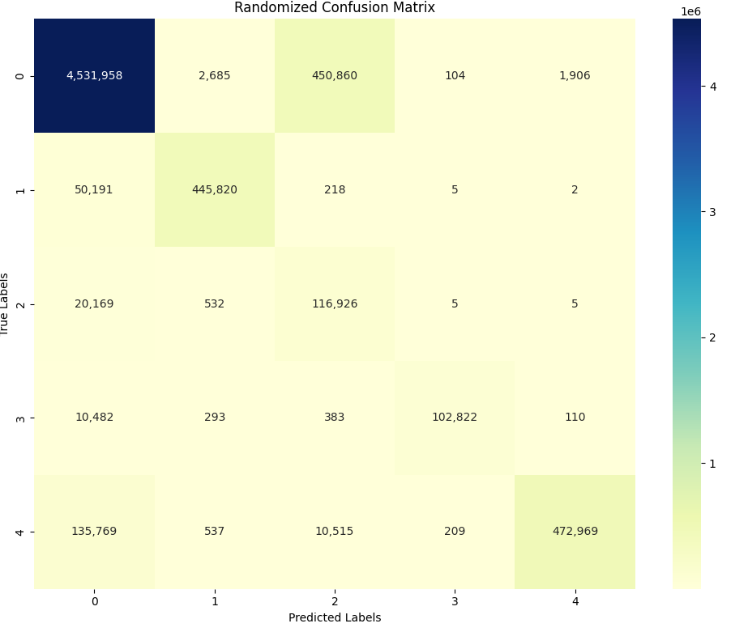
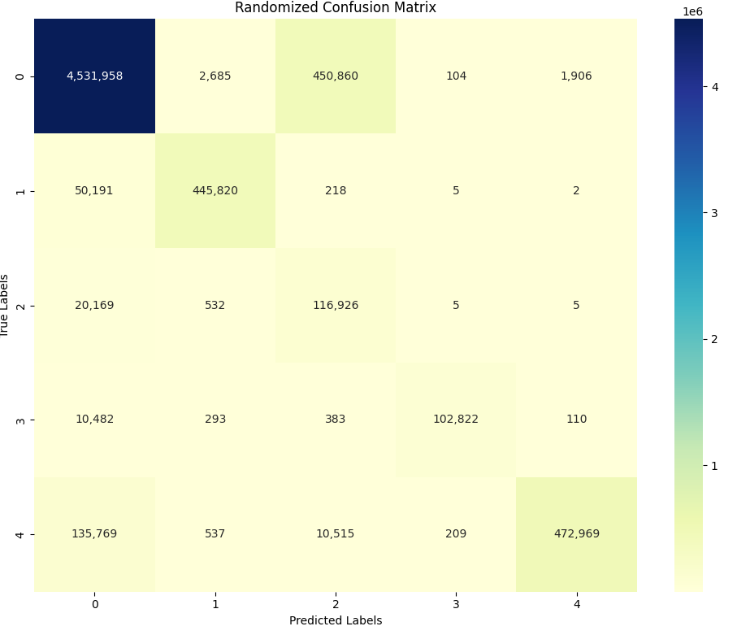
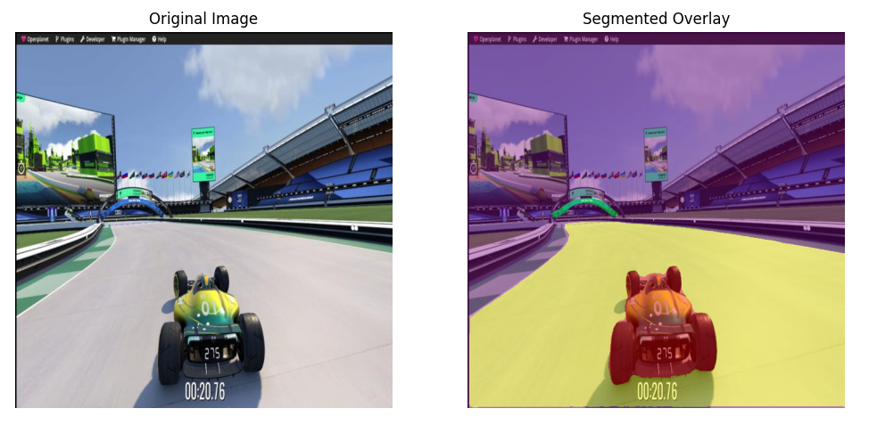
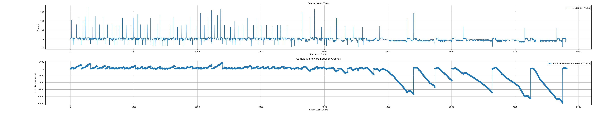

CNN evaluation
Confusion matrix of the CNN evaluation on the test set.
This project focuses on developing an autonomous driving agent for Trackmania 2020 using reinforcement learning. The goal is to train an AI to complete tracks as quickly and efficiently as possible without human input. The system uses a Convolutional Neural Network (CNN) for real-time image segmentation of the game environment and a Deep Q-Network (DQN) to make driving decisions based on visual input. Through continuous interaction with the game, the AI learns to improve its lap times by optimizing its control strategy and navigating the track with increasing precision.
The video shows where we got up to and explains how it works.
Confusion matrix of the CNN evaluation on the test set.
Sample of the reward convergence plot of the DQN training.

Original vs segmented overlay on the test set.
Below shows the training decaying from too many punishments accumulating and the model giving up on learning. It also shows overfitting to short-term rewards. (Top graph: rewards per step, Bottom Graph: Cumulative Rewards Per Crash)
Our custom reward function is designed to guide a Deep Q-Network (DQN) agent toward fast, efficient, and intelligent driving behavior. Rewards and penalties are allocated as follows:
Penalties:
This dynamic reward structure encourages the agent to learn not just to reach checkpoints, but to do so quickly, smoothly, and consistently—while penalizing unsafe or inefficient actions.
The agent uses a Deep Q-Network (DQN) to decide which action to take at every step. The action selection balances exploration (random behavior) and exploitation (choosing the best-known action) based on a probability value epsilon.
Epsilon-Greedy Strategy:
epsilon, the agent selects a random action. This encourages exploration of new strategies.track_direction. If the car is veering left or right, the random action is slightly biased to correct the path.W) is selected randomly; sometimes backward (S) is chosen.Neural Network Inference:
1 - epsilon, the agent uses the DQN to compute Q-values for each possible action.state is converted into a tensor and processed by the network.This approach ensures the agent learns to make reliable, context-aware decisions, while still occasionally exploring alternate behaviors to improve learning.
The segmentation model used in this project is based on a U-Net architecture with a ResNet-34 encoder pretrained on ImageNet. This model is specifically designed for semantic segmentation, which involves assigning a class label to every pixel in an input image.
The training data consists of Trackmania gameplay frames annotated using the COCO format. The dataset includes four object classes in addition to a background class. A custom PyTorch Dataset class is used to load the dataset, which parses COCO annotations and converts them into binary masks corresponding to each object category.
Training is performed using the cross-entropy loss function and the Adam optimizer over the course of 50 epochs. During this process, the U-Net learns to map RGB input images to segmentation masks, effectively identifying key game elements.
The overlay shown in the segmented image demonstrates the model’s output superimposed on the original gameplay frame. This highlights the model's capability to accurately distinguish track surfaces, the car, and other visual game elements in real-time.
@article{park2021nerfies,
author = {Park, Keunhong and Sinha, Utkarsh and Barron, Jonathan T. and Bouaziz, Sofien and Goldman, Dan B and Seitz, Steven M. and Martin-Brualla, Ricardo},
title = {Nerfies: Deformable Neural Radiance Fields},
journal = {ICCV},
year = {2021},
}